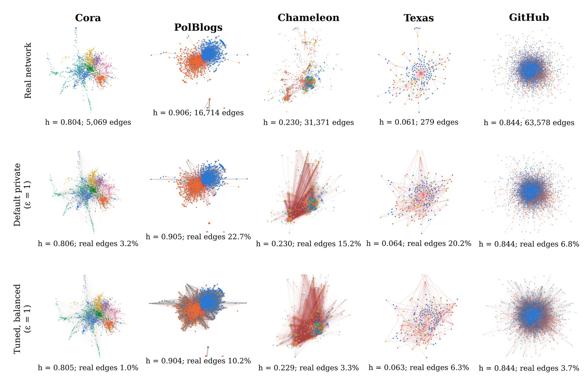
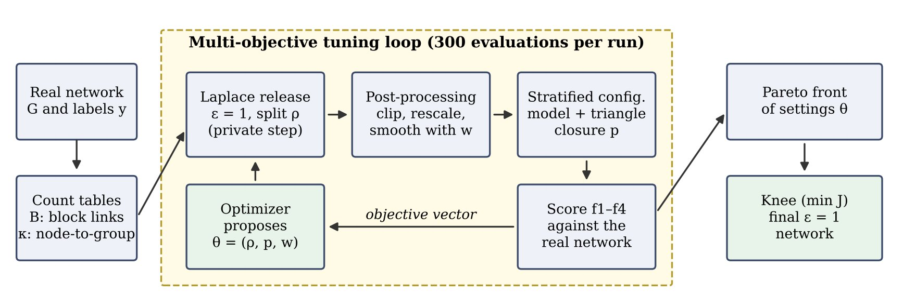
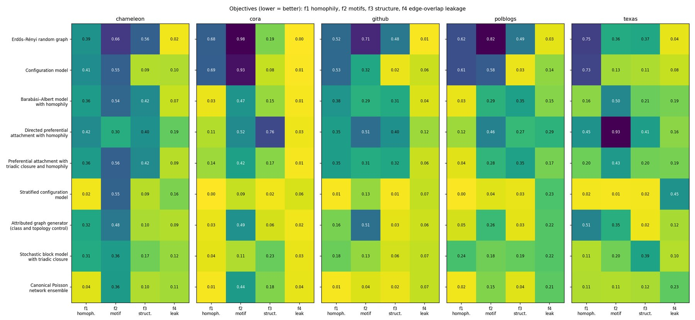
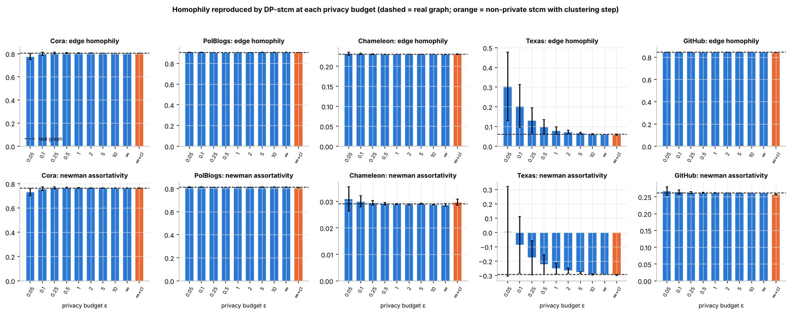
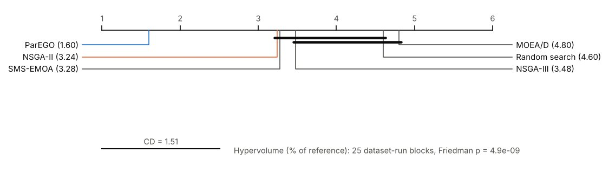
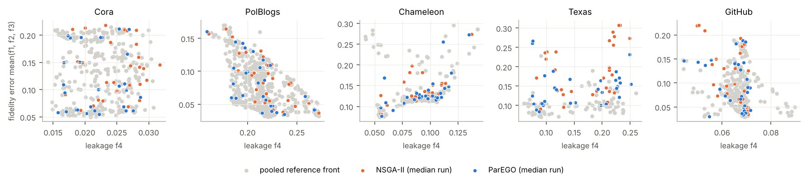
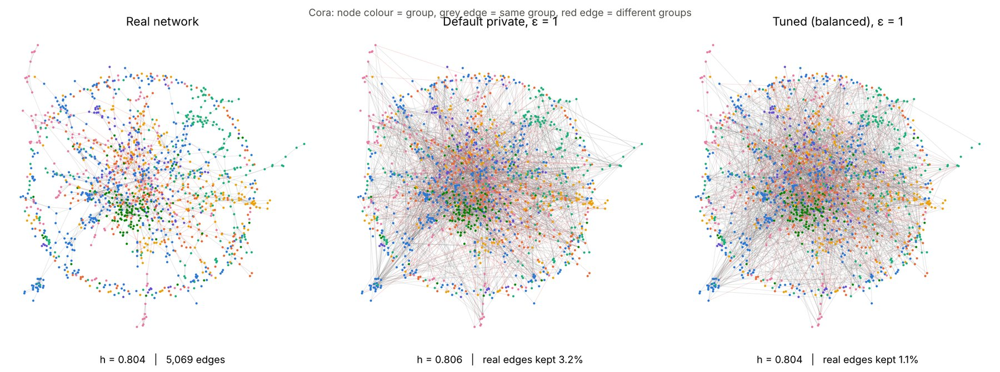

M.Tech Dissertation · Artificial Intelligence · 2026–27
A Multi-Objective Evolutionary Approach for Privacy-Preserving Synthetic Network Generation with Homophily
Department of Computer Science and Engineering, Amrita School of Computing,
Amrita Vishwa Vidyapeetham, Coimbatore

Problem statement
Real networks such as citation graphs, follower graphs or hyperlink graphs are useful for research, but sharing them can expose who is connected to whom. A common workaround is to share a synthetic network instead. For it to be useful, it has to behave like the real one in three ways:
- Homophily: nodes of the same group link to each other about as often as in the real network.
- Motifs: the number of closed triangles and the clustering are kept.
- Degree structure: hubs, degree inequality and path lengths stay similar.
The most faithful synthetic network is a copy of the real one, and a copy gives no privacy. Differential privacy bounds how much a release can reveal about any single edge, but its noise also damages the statistics the generator needs. These goals pull against each other, so there is no single best setting.
Given a real network in which every node has a group label, generate synthetic networks that keep its homophily, triangle motifs and degree structure while limiting leakage of the real edges under edge-level ε-differential privacy, and present the remaining trade-offs as a set of Pareto-optimal generator settings found by a multi-objective optimiser chosen through a controlled comparison.
Project objectives
- Benchmark seven homophily-aware network generators and two null models on five real networks, using one set of measures grouped into four objectives (homophily, motifs, structure, leakage), and pick the most faithful generator.
- Release the statistics this generator reads under edge-level ε-differential privacy, check the sensitivities empirically, and measure how the privacy budget affects every objective.
- Formulate the tuning of the private generator as a four-objective, noisy, black-box optimisation problem.
- Compare multi-objective optimisers under a fair, noise-aware protocol and select the best one using a rule fixed in advance.
- Release final private synthetic networks at a fixed budget and compare them with the real network, the non-private generator and the untuned private generator.
Methodology

Generator benchmark
Seven homophily-aware generators (BA-Homophily, DPAH, PATCH, STCM, GenCAT, SBM with triadic closure, canonical Poisson ensemble) and two null models (Erdős–Rényi, configuration model) were compared on ten measures. The stratified configuration model (STCM) was the most faithful, with an average rank of 1.40, but it also copied the most real edges.
Differentially private STCM
STCM reads two count tables from the real network: block edge counts B (sensitivity 1) and per-node group counts κ (sensitivity 2). Both are released with Laplace noise under pure edge-level ε-DP, with the budget split by ρ. Both sensitivities were checked by removing edges one at a time. Clipping, smoothing, rounding and generation are post-processing, so they use no extra budget.
Multi-objective tuning
With ε fixed at 1, three settings are tuned: the budget split ρ, the triangle-closure probability p and a smoothing weight w. NSGA-II, NSGA-III, MOEA/D, SMS-EMOA, ParEGO and random search were compared: 5 runs × 300 evaluations per optimiser and data set, with common random numbers and fronts re-scored on fresh noise.
Objectives (all minimised)
| Objective | Built from | |
|---|---|---|
| f1 | Homophily error | Edge homophily, Newman assortativity, mixing-matrix distance |
| f2 | Motif error | Global clustering, share of same-group triangles |
| f3 | Structure error | Degree KS statistic, degree Gini, average shortest path |
| f4 | Leakage | Edge-overlap rate with the real network after node alignment |
Data sets
| Data set | Type | Groups | Nodes / edges used | Edge homophily |
|---|---|---|---|---|
| Cora | Citation network | Paper topic (7) | 2,485 / 5,069 | 0.804 |
| PolBlogs | Political blog hyperlinks | Leaning (2) | 1,222 / 16,714 | 0.906 |
| Chameleon | Wikipedia page links | Traffic level (5) | 2,277 / 31,371 | 0.230 |
| Texas | University web pages | Page role (5) | 183 / 279 | 0.061 |
| GitHub | Developer followers | Developer type (2) | 5,000 / 63,578 (sample) | 0.844 |
The five networks range from strongly homophilic (PolBlogs, GitHub, Cora) to heterophilic (Chameleon, Texas). All are made undirected and reduced to their largest connected component. GitHub is a 5,000-node class-stratified forest-fire sample.
Tools: Python, NetworkX, NumPy, SciPy, pandas, pymoo 0.6.2, scikit-learn, Matplotlib, igraph.
Results
Stage 1: which generator is most faithful?

Stage 2: what does privacy cost?

Stage 3: which optimiser should tune the generator?


Final private networks at ε = 1
| Data set | Motif error f2 | Leakage f4 | Real edges reproduced | Membership-inference AUC | Isolated nodes |
|---|---|---|---|---|---|
| Cora | 0.494 → 0.062 | 0.040 → 0.016 | 0.034 → 0.009 | 0.656 → 0.548 | 12.2% → 5.0% |
| PolBlogs | 0.253 → 0.038 | 0.224 → 0.187 | 0.228 → 0.101 | 0.902 → 0.711 | 6.0% → 17.6% |
| Chameleon | 0.659 → 0.014 | 0.117 → 0.055 | 0.152 → 0.031 | 0.883 → 0.687 | 1.0% → 4.0% |
| Texas | 0.238 → 0.087 | 0.222 → 0.088 | 0.233 → 0.062 | 0.740 → 0.613 | 14.6% → 20.0% |
| GitHub | 0.369 → 0.020 | 0.066 → 0.055 | 0.067 → 0.037 | 0.877 → 0.719 | 3.7% → 18.2% |
Default private setting (ρ = 0.3, p = 0, w = 0) → tuned ParEGO setting, means of five releases. Tuning cuts motif error and leakage on every data set and keeps homophily. The cost is a higher structure error and, on four data sets, more isolated nodes.
Demonstration videos
1. Project overview
The problem, the three-stage method and the main findings.
2. Live demo
Running demo.py to generate default and tuned private networks from Cora and compare them with the real one.
3. Results walkthrough
Optimiser ranking, Pareto fronts and the final networks on all five data sets.

python demo.py --dataset cora, which runs in under 10 seconds. The tuned network keeps edge homophily (0.804) and clustering (0.092 vs 0.090), while copying only about 1% of the real edges.Project progress
- Jul – Aug 2026Literature survey and problem definition. Homophily measures and generators, private graph release, multi-objective optimisation. Data sets selected; first genetic-algorithm experiments on homophily-controlled generation.
- 29 Aug 2026Review 1. Problem statement, research gap, proposed methodology and project plan.
- Sep – Oct 2026Stage 1: generator benchmark. Seven generators and two null models implemented and compared on five data sets with ten measures and four objectives.
- 10 Oct 2026Review 2. Benchmark results; STCM selected as the base generator.
- Oct – Nov 2026Stages 2 and 3. Differentially private STCM with verified sensitivities; comparison of optimisers; final private networks at ε = 1.
- Nov 2026Dissertation Phase I report completed.
- Phase IIPlanned. ParEGO at ε = 0.5, 1 and 2; ablation of the smoothing and closure steps; a wider audit of network properties (centralities, spectrum, communities, re-identification risk); NSGA-II at every budget; ten runs per optimiser; private tuning; a wider range for ρ.
Documentation
Getting started
git clone https://github.com/SavithaRajendiran88/Privacy-Preserving-Synthetic-Network-Generation-with-Homophily.git
cd Privacy-Preserving-Synthetic-Network-Generation-with-Homophily
python -m venv .venv
source .venv/bin/activate # Windows: .venv\Scripts\activate
pip install -r requirements.txt
python demo.py --dataset cora # quick demo, under 10 secondsData sets are downloaded automatically on first use. demo.py accepts --dataset (cora, polblogs, chameleon, texas, github) and --setting (fidelity, balanced, privacy).
Full pipeline
python final_pipeline/fyp_pipeline.py check --workers N # smoke test on Texas and Cora
python final_pipeline/fyp_pipeline.py all --workers N --runs 5 # full study as reported
python final_pipeline/fyp_pipeline.py status # progressEvery step (data, verify, run, analyze, final, figures) can be run on its own and resumes where it stopped. The earlier stages are in stage1_generators/, stage2_dp_stcm/ and stage3_moo_comparison/. See the README for all options.
Repository layout
common/ | Metrics, objectives f1–f4, the nine generators, data set loaders |
stage1_generators/ | Generator benchmark |
stage2_dp_stcm/ | Private STCM: verification, ε and ρ sweeps, sample graphs |
stage3_moo_comparison/ | First comparison of ten optimisers over (ε, ρ, p) |
final_pipeline/ | Final study at ε = 1 with θ = (ρ, p, w): runs, analysis, final networks, figures |
demo.py | Short demonstration on a single data set |
docs/ | This website |
Dissertation Phase I report
The report is not published here. Its chapters are:
- 1. Introduction
- Why homophily, motifs and degree structure matter, why privacy conflicts with them, the problem definition and the four contributions.
- 2. Literature survey
- Thirteen papers on homophily measurement and generators, ten on multi-objective optimisation and papers on private graph release. Ends with the research gap: no existing method combines formal privacy, multi-objective search and explicit homophily and motif preservation.
- 3. Proposed work
- Measures and objectives, generator flowcharts, the private release (Algorithm 1), the tuning problem, the optimisers including ParEGO (Algorithm 2), the evaluation protocol, data sets and platform.
- 4. Results and inferences
- The generator benchmark, the effect of the privacy budget, the optimiser comparison, what the search reveals about the settings, the final networks, three operating points and sensitivity to ε.
- 5. Conclusion and future enhancements
- Summary, limitations and the Phase II plan.
Limitations
- The guarantee covers single edges, not a node's whole neighbourhood. Node identities, node count and labels are treated as public.
- Tuning scores candidates against the real network, so the choice of θ is outside the privacy budget. Each released network is ε-DP for its own setting.
- Five runs per optimiser and data set limit the power of the per-data-set tests.
- The balanced ρ sits at its upper bound of 0.95, so a wider range may help.
Team
Savitha Rajendiran
M.Tech, Artificial Intelligence
Amrita School of Computing, Coimbatore
Dr. Anisha Radhakrishnan
Project guide
Assistant Professor, Department of CSE
Amrita School of Computing, Coimbatore